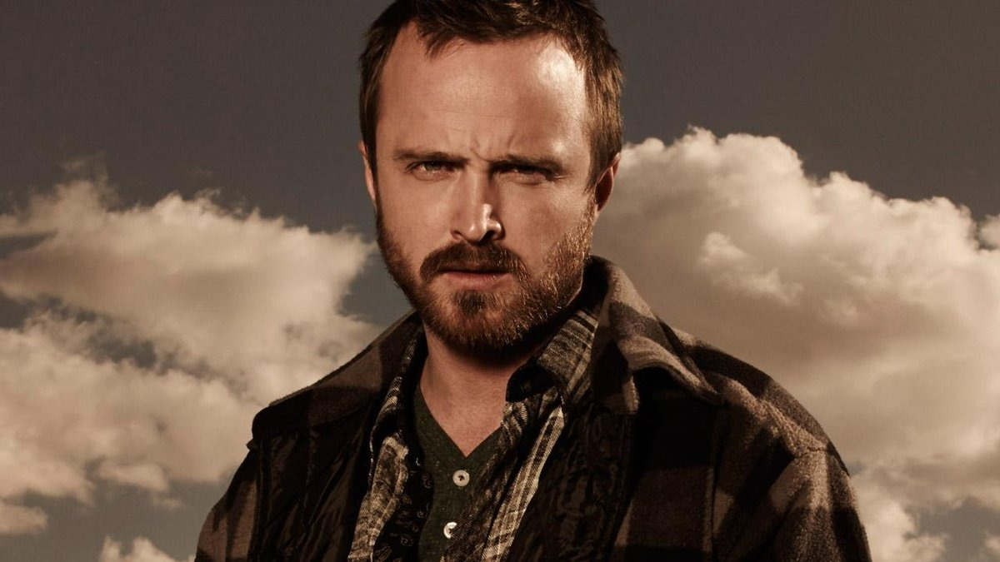
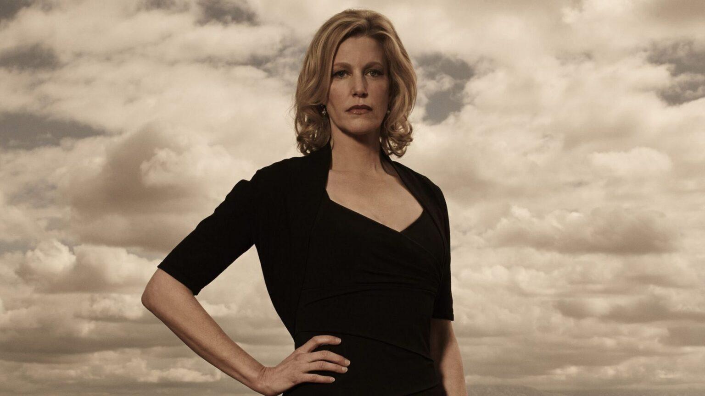

Interpretado por: Bryan Cranston.
Primeira aparição: Temporada 1, Episódio 1
Professor de química do ensino médio que se transforma em fabricante de metanfetamina após ser diagnosticado com câncer de pulmão inoperável. A necessidade de garantir o futuro financeiro de sua família o leva a uma vida de crime. Walter assume o pseudônimo “Heisenberg” à medida que sua personalidade e ações se tornam cada vez mais vilanescas.
Interpretado por: Aaron Paul.
Primeira aparição: Temporada 1, Episódio 1.
Ex-aluno de Walter White, Jesse se torna seu parceiro na produção de metanfetamina. Com um passado marcado por problemas e laços com o mundo das drogas, Jesse passa por uma evolução significativa ao longo da série, muitas vezes confrontado com a moralidade de suas escolhas. Apesar de suas falhas, ele demonstra momentos de grande cuidado e lealdade, especialmente em relação às pessoas que ama, sendo um dos principais persoangens de Breaking Bad.
Interpretada por: Anna Gunn.
Primeira aparição: Temporada 1, Episódio 1.
Skyler é a esposa de Walter White e mãe de Walter Jr. e Holly. Conforme ela descobre as atividades criminosas do marido, Skyler é arrastada para um mundo de moralidade questionável. Ela luta para manter sua família segura enquanto navega pelas consequências das escolhas de Walter, eventualmente se envolvendo na lavagem de dinheiro para proteger seus filhos.
Interpretado por: RJ Mitte
Primeira aparição: Temporada 1, Episódio 1
Walter Jr. é o filho de Walter e Skyler White. Lutando com paralisia cerebral, ele busca a independência e normalidade apesar de sua condição. Conhecido por sua coragem e lealdade à família, ele admira seu pai, desconhecendo inicialmente suas atividades criminosas. Walter Jr. enfrenta seus próprios desafios de crescimento e identidade, especialmente à medida que a verdade sobre seu pai vem à tona, o que testa suas crenças e valores fundamentais.
inicio indexhtml